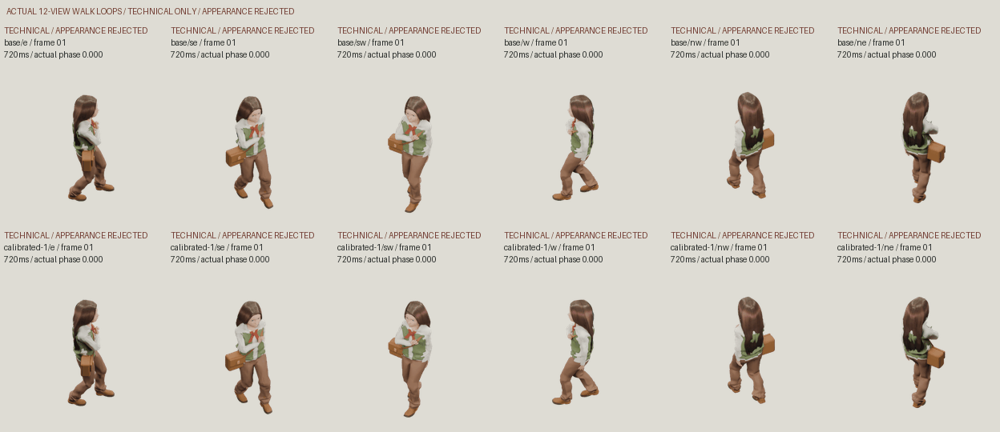

TECHNICAL ONLY — GENERIC APPEARANCE REJECTED. NOT FINAL GAME ART.
24 genuine rendered poses /720ms, base and tilted calibrations, fixed native scale/ground-root anchor. This is a review artifact; no route adapter or game activation.

Source/camera manifest · Actual geometry/frame checks · Native adapter inputs, route adapter pending